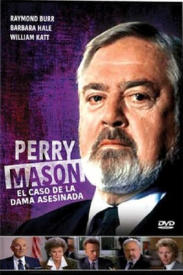

#6655 Perry Mason und die verheiratete Dirne
Alternativ: Perry Mason: The Case of the Murdered Madam
 
 IMDB-Wertung: 7.0 / 10
IMDB-Wertung: 7.0 / 10  Metascore: 0
Metascore: 0 
Als eine Ehefrau mit zweifelhaftem Vorleben in ihrem Schlafzimmer ermordet aufgefunden wird, geraten ihre Freundin, drei Bankdirektoren und ein Computerspezialist in Tatverdacht. Hauptverdächtiger ist jedoch der Ehemann der Toten, dessen Verteidigung Perry Mason übernimmt.
Jahr: 1987
Dauer: 95 Minuten
FSK:
Land: USA Studio: NBCTonspuren:
Untertitel:
Auflösung: SD (640x478) Größe: 980 MB
Genre: Drama, Krimi, Mystery
Regisseur: Ron Satlof
Drehbuch: Patricia Green
Soundtrack:
Darsteller:
 Raymond Burr als Perry Mason
Raymond Burr als Perry Mason Barbara Hale als Della Street
Barbara Hale als Della Street- William Katt als Paul Drake Jr.
- Daphne Ashbrook als Miranda Bonner
- Anthony Geary als Steve Reynolds
 Bill Macy als Richard Wilson
Bill Macy als Richard Wilson- James Noble als Leonard Weeks
 John Rhys-Davies als Edward Tremaine
John Rhys-Davies als Edward Tremaine- Ann Jillian als Suzanne
 David Ogden Stiers als D.A. Michael Reston
David Ogden Stiers als D.A. Michael Reston- Kim Johnston Ulrich als Candy
- Jamie Horton als Frank Sims
 Richard Portnow als Harry Long
Richard Portnow als Harry Long Mike Moroff als Bouncer
Mike Moroff als Bouncer- John Nance als Judge Prescott
- Vincent Baggetta als Tony Domenico
 Jason Bernard als Sergeant Koslow
Jason Bernard als Sergeant Koslow- Wendelin Harston als Helen Robinson
- Michael K. Osborn als Sy Hammond
- Cece Berglund als Lady of the night , uncredited
- Maria Cecile Callier als Lady of the Evening , uncredited
Datei: X:\Person\Perry Mason\Perry Mason und die verheiratete Dirne (1987, FSK, 640x478).mkv seit 28.07.2017
Festplatte: HD Collection-7+mehr(A-Z)+Person
 Es gibt insgesamt 20 Filme in der Gruppe 'Person\Perry Mason'
Es gibt insgesamt 20 Filme in der Gruppe 'Person\Perry Mason'